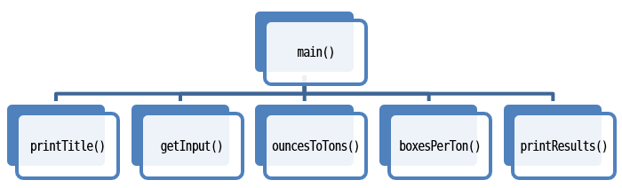

Functional Decomposition
To practice with functions, let's revisit an earlier problem which you solved. Click the LEC-02 Solution link to open my solution to the lab problem we completed in class. Click the Fork button to make your own copy so you can follow along.
A metric ton is 35,273.92 ounces.
Write a program that will read the weight of a package of
breakfast cereal in ounces and output the weight in metric tons as
well as the number of boxes needed to yield one metric ton of
cereal.
--Savitch, Absolute C++ 5th Edition, Chapter 2
Modify the program by changing the main function, so that
it starts by
calling functions for input, output and processing.
(Make sure you comment out the existing code in main
rather than deleting it.)
int main()
{
printTitle();
double ouncesPerBox = getInput();
double tons = ouncesToTons(ouncesPerBox);
double boxes = boxesPerTon(tons);
printResults(tons, boxes);
return 0;
}This method, starting at the highest level, and breaking the program into smaller and smaller functions, is called top down design or procedural decomposition.

 This course content is offered under a
CC
Attribution Non-Commercial license. Content in this course
can be considered under this license unless otherwise noted.
This course content is offered under a
CC
Attribution Non-Commercial license. Content in this course
can be considered under this license unless otherwise noted.